화학분석기사(구) (2015-03-08 기출문제)
1과목: 일반화학
1. 비중이 1.8이고, 순도가 96%인 황산 용액의 몰농도를 구하면 약 몇 M인가?
- 5.4
- 17.6
- 18.4
- 35.2
(정답률: 70%)
2. 다음은 질산을 생성하는 Ostwald 공정을 나타낸 화학반응식이다. 균형이 맞추어진 화학반응식의 반응물과 생성물의 계수 a, b, c, d가 옳게 나열된 것은?
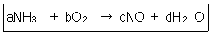
- a=2 b=3 c=2 d=3
- a=6 b=4 c=5 d=6
- a=4 b=5 c=4 d=6
- a=1 b=1 c=1 d=1
(정답률: 77%)

3. 어떤 염의 물에 대한 용해도가 섭씨 70도에서 60, 섭씨 30도에서 20이다. 섭씨 70도의 포화 용액 100g을 섭씨 30도로 식힐 때 나타나는 현상으로 옳은 것은?
- 섭씨 70도에서 포화 용액 100g에 녹아 있는 염의 양은 60g이다.
- 섭씨 30도에서 포화 용액 100g에 녹아 있는 염의 양은 20g이다.
- 섭씨 70도에서 포화 용액을 섭씨 30도로 식힐 때 불포화 용액이 형성된다.
- 섭씨 70도의 포화용액을 섭씨 30도로 식힐 때 석출되는 염의 양은 25g이다.
(정답률: 70%)
4. C7H16의 IUPAC(국제순수응용연합)의 명명법에 따른 이름은?
- 펜탄(펜테인)
- 헵탄(헵테인)
- 헥산(헥테인)
- 옥탄(옥테인)
(정답률: 78%)
5. 용해도에 대한 설명으로 틀린 것은?
- 용해도란 특정온도에서 주어진 양의 용매에 녹을 수 있는 용질의 최대양이다.
- 일반적으로 고체물질의 용해도는 온도증가에 따라 상승한다.
- 일반적으로 물에 대한 기체의 용해도는 온도 증가에 따라 감소한다.
- 외부압력은 고체의 용해도에 큰 영향을 미친다.
(정답률: 70%)
6. 원자반지름이 작은 것부터 큰 순서로 나열된 것은?
- P＜S＜As＜Se
- S＜P＜Se＜As
- As＜Se＜P＜S
- Se＜As＜S＜P
(정답률: 79%)
7. 다음 단위체 중 첨가 중합체를 만드는 것은?
- C2H6
- C2H4
- HOCH2CH2OH
- HOCH2CH3
(정답률: 82%)
8. 메타-다이나이트로벤젠의 구조를 옳게 나타낸 것은?
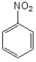
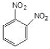
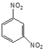
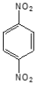
(정답률: 83%)
9. 다음과 같은 전자 배치를 갖는 원소는?(오류 신고가 접수된 문제입니다. 반드시 정답과 해설을 확인하시기 바랍니다.)
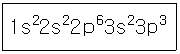
- Al
- Si
- P
- S
(정답률: 52%)
10. 강산인 0.1M 질산 수용액의 pH는 얼마인가?
- 0.1
- 1
- 2
- 3
(정답률: 83%)
11. 11.99g의 염산이 녹아있는 5.48M 염산 용액의 부피는 몇 mL인가? (단, 염산의 분자량은 36.45이다.)
- 12.5
- 17.8
- 30.4
- 60.0
(정답률: 81%)
12. 탄화수소유도체를 잘못 나타낸 것은?
- R-OH:알코올
- R-CONH2:아마이드
- R-CO-R:케톤
- R-CHO:에테르
(정답률: 83%)
13. 다음 중 짝산-짝염기 쌓인 것은?
- HCl-OCl-
- H2SO4-SO42-
- NH4+-NH3
- H3O+-OH-
(정답률: 73%)
14. 다음 분자는 σ-결합과 π-결합이 각각 얼마나 있는가?
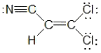
- σ-결합:6, π-결합:3
- σ-결합:7, π-결합:2
- σ-결합:8, π-결합:1
- σ-결합:9, π-결합:0
(정답률: 75%)
15. 부탄(C4H10) 1몰을 완전 연소시킬 때 발생하는 이산화탄소와 물의 질량비에 가장 가까운 것은?
- 2.77:1
- 1:2.77
- 1.96:1
- 1:1.96
(정답률: 74%)
16. 황의 산화수(Oxisation Number)가 틀린 것은?
- CaSO4:+4
- SO32--:+4
- SO3:+6
- SO2:+4
(정답률: 86%)
17. 아세톤의 다른 명칭으로서 옳은 것은?
- dimethylketone
- 1-propanone
- propanal
- methylethylketone
(정답률: 78%)
18. 섭씨 100도, 1기압에서 산소 1L와 수소 1L를 온도와 압력이 유지되는 용기에서 반응시켰다. 반응이 끝난 후 생성된 수중기의 부피와 용기 속에 포함된 기체의 총 부피는 각각 몇 L인가?
- 1, 1.5
- 1.5, 2
- 2, 2.5
- 2.5, 3
(정답률: 69%)
19. 다음 중 질량이 가장 큰 것은?
- 273K, 1atm에서 이상기체인 He 0.224L
- 탄소 원자 0.01 몰
- 산소 원자 0.01 몰
- 이산화탄소 분자 0.01 몰 내에 들어있는 총 산소 원자
(정답률: 77%)
20. 다음 중 불포화 탄화수소에 속하지 않는 것은?
- alkane
- alkene
- alkyne
- arene
(정답률: 85%)
2과목: 분석화학
21. 다음 중 전지를 선 표시법으로 가장 옳게 나타낸 것은?
- Cd(s) | Cd(NO3)2(aq) ∥ AgNO3(aq) | Ag(s)
- Cd(s), Cd(NO3)2(aq) ∥ AgNO3(aq), Ag(s)
- Cd(s) | Cd(NO3)2(aq), AgNO3(aq) | Ag(s)
- Cd(s), Cd(NO3)2(aq) | AgNO3(aq), Ag(s)
(정답률: 86%)
22. 0.10M KNO3와 0.1M Na2SO4 혼합용액의 이온세기는 얼마인가?
- 0.40
- 0.35
- 0.30
- 0.25
(정답률: 70%)
23. 0.010M AgNO3 용액에 H3PO4를 첨가시, Ag3PO4침전이 생기기 시작하려면 PO43- 농도는 얼마보다 커야 하는가? (단, Ag3PO4의 Ksp=1.3×10-20이다.)
- 1.3×10-22
- 1.3×10-20
- 1.3×10-18
- 1.3×10-14
(정답률: 44%)
24. 갈바니 전지에 대한 설명 중 틀린 것은?
- 갈바니 전지에서는 산화ㆍ환원 반응이 모두 일어난다.
- 염다리를 사용할 수 있다.
- 자발적인 화학반응이 전기를 생성한다.
- 자발적 반응이 일어나는 경우 일반적으로 전위차 값을 음수로 나타낸다.
(정답률: 82%)
25. 활동도 계수의 특성에 대한 다음 설명 중 틀린 것은?
- 너무 진하지 않은 용액에서 주어진 화학종의 화롱도 계수는 전해질의 성질에 의존한다.
- 대단히 묽은 용액에서는 활동도 계수는 1이된다. 이러한 경우에 활동도 농도는 같다.
- 주어진 이온 세기에서 이온의 활동도 계수는 이온 화학종의 전하가 증가함에 따라 1에서 벗어나게 된다.
- 한 화학종의 활동도 계수는 화학종이 포함된 평형에서 그 화학종이 평형에 미치는 영향의 척도이다.
(정답률: 56%)
26. 난용성 고체염인 BaSO4로 포화된 수용액에 관한 설명으로 틀린 것은?
- BaSO4 포화수용액에 황산 용액을 넣으면 BaSO4가 석출된다.
- BaSO4 포화수용액에 소금물을 첨가 시에도 BaSO4가 석출된다.
- BaSO4의 Ksp는 온도의 함수이다.
- BaSO4 포화수용액에 BaCl2 용액을 넣으면 BaSO4가 석출된다.
(정답률: 81%)
27. 탄산(pKa1=6.4, pKa2=10.3) 용액을 수산화나트륨용액으로 적정할 때, 첫 번째 종말점의 pH에 가장 가까운 것은?
- 6
- 7
- 8
- 10
(정답률: 53%)
28. EDTA의 pK1부터 pK6까지의 값은 0.0, 1.5, 2.0, 2.66, 6.16, 10.24이다. 다음 EDTA의 구조식은 pH가 얼마일 때 주요성분인가?
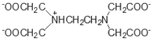
- pH 12
- pH 7
- pH 3
- pH 1
(정답률: 76%)
29. Cd2+ 이온이 4분자의 암모니아(NH3)와 반응하는 경우와 2분자의 에틸렌디아민(H2NCH2CH3NH2)과 반응하는 경우에 대한 설명으로 옳은 것은?
- 엔탈피 변화는 두 경우 모두 비슷하다.
- 엔트로피 변화는 두 경우 모두 비슷하다.
- 자유에너지 변화는 두 경우 모두 비슷하다.
- 암모니아와 반응하는 경우가 더 안정한 금속착물을 형성한다.
(정답률: 76%)
30. 0.1000M HCl 용액 25.00mL를 0.1000M NaOH용액으로 적정하고 있다. NaOH 용액 25.10mL가 첨가되었을 때의 용액의 pH는 얼마인가?
- 11.60
- 10.30
- 3.70
- 2.40
(정답률: 57%)
31. 플루오르와칼슘(CaF2)의 용해도곱은 3.9×10-11이다. 이 염의 포화용액에서 칼슘 이온의 몰농도는 몇 M인가?
- 2.1×10-4
- 3.3×10-4
- 6.2×10-6
- 3.9×10-11
(정답률: 64%)
32. 다음의 증류수 또는 수용액 고체 Hg2(IO3)2(Ksp=1.3×10-18)를 용해시킬 때, 용해된 Hg22+의 농도가 가장 큰 것은?
- 증류수
- 0.10M KIO3
- 0.20M KNO3
- 0.30M NalO3
(정답률: 71%)
33. CaF2의 용해와 관련된 반응식에서 과량의 고체 CaF2가 남아 있는 포화된 수용액에서 Ca2+(aq)의 몰 농도에 대한 설명으로 옳은 것은? (단, 용해도의 단위는 mol/L이다.)
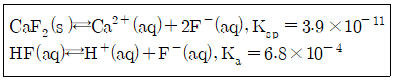
- KF를 첨가하면 몰 농도가 감소한다.
- HCl을 첨가하면 몰 농도가 감소한다.
- KCl을 첨가하면 몰 농도가 감소한다.
- H2O를 첨가하면 몰 농도가 감소한다.
(정답률: 69%)
34. 25℃에서 0.028M의 NaCN 수용액의 pH는 얼마인가? (단, HCN의 Ka=4.9×10-10이다.)
- 10.9
- 9.3
- 3.1
- 2.8
(정답률: 50%)
35. 염화나트륨 5.8g 매스플라스크에 넣은 후 물을 넣어 녹인 후 100mL까지 물을 채웠다. 염화나트륨의 몰농도는 몇 M인가? (단, 염화나트륨의 분자량은 58g/mol이다.)
- 0.10M
- 1.0M
- 3.0M
- 10.0M
(정답률: 27%)
36. 0.15M 아질산(HNO2) 수용액 중 하이드로늄 이온(H3O+)농도는 약 몇 M인가? (단, 아질산의 수용액 중 산해리 상수는 5.1×10-4이다.)
- 0.171
- 0.150
- 0.00875
- 0.00226
(정답률: 62%)
37. 다음 중 부피 및 질량 적정법에서 기준물질로 사용되는 일차 표준물질(primary standard)의 필수 조건으로 가장 거리가 먼 것은?
- 대기 중에서 안정해야 한다.
- 적정매질에서 용해도가 작아야 한다.
- 가급적 큰 몰 질량을 가져야 한다.
- 수화된 물이 없어야 한다.
(정답률: 69%)
38. 어떤 아민의 pKb가 5.80이라면, 0.2M 아민 용액의 pH는 얼마인가?
- 2.25
- 4.25
- 10.75
- 11.75
(정답률: 56%)
39. 20℃에서 빈 플라스크의 질량은 10.2634g이고, 증류수로 플라스크를 완전히 채운 후 질량은 20.2144g이었다. 20℃에서 물 1g의 부피가 1.0029mL일 때, 이 플라스크의 부피를 나타내는 식은 무엇인가?
- (20.2144-10.2634)×1.0029
- (20.2144-10.2634)÷1.0029
- 1.0029+(20.2144-10.2634)
- 1.0029÷(20.2144-10.2634)
(정답률: 77%)
40. MnO4-이온에서 망간(Mn)의 산화수는 얼마인가?
- -1
- +4
- +6
- +7
(정답률: 85%)
3과목: 기기분석I
41. 분광분석의 일반적인 순서로 옳은 것은?
- 시약준비→흡광도 측정→검량선 작성→시료 및 표준용액 발색→정량
- 시약준비→시료 및 표준용액 발색→흡광도 측정→검량선 작성→정량
- 시약준비→검량선 작성→시료 및 표준용액 발색→흡광도 측정→정량
- 시약준비→흡광도 측정→시료 및 표준용액 발색→검량선 작성→정량
(정답률: 67%)
42. 원자 형광분광기 중 전극 없이 방전등 또는 속빈 음극등을 들뜸 광원으로 사용하는 비분산 시스템에 대한 설명으로 틀린 것은?
- 단색화 장치를 사용하여 원하는 파장의 스펙트럼을 주사해야 한다.
- 비분산 시스템은 광원, 원자화장치 및 검출기만으로 구성될 수 있다.
- 비분산 시스템은 다성분 원소분석에 쉽게 응용할 수 있다.
- 높은 에너지 산출과 다중 방출선에서 나오는 에너지의 동시수집으로 감도가 높다.
(정답률: 43%)
43. 물분자의 기준진동의 자유도는 얼마인가?
- 2
- 3
- 4
- 5
(정답률: 80%)
44. 유도 결합 플라스마(ICP) 방출분광법의 특징에 대한 설명으로 틀린 것은?
- 고분해능
- 높은 세기의 미광 복사선
- 정밀한 세기 읽기
- 빠른 신호 획득과 회복
(정답률: 71%)
45. 플라스마 원자발괄분광법으로 정량분석 시 유의사항에 대한 설명으로 틀린 것은?
- 표준용액이 변질되거나 오염되지 않아야 한다.
- 표준용액과 시료 용액의 조성이 달라야 한다.
- 표준시료를 사용한 분석법의 신뢰성 점검이 필요하다.
- 분광 관섭이 없는 분석선을 선택하여 사용하여야 한다.
(정답률: 79%)
46. 적외선(IR) 흡수분광법에 대한 설명으로 틀린 것은?
- 에너지 전이에 필요한 에너지 크기의 순서는 E회전전이 ＜E진동전이＜E전자전이이다.
- IR에서는 주로 분자의 진도(Vibration)운동을 관찰한다.
- CO2분자는 IR peak를 나타내지 않는다.
- 정성 및 정량, 유기물 및 무기물에 모두 이용된다.
(정답률: 66%)
47. 다음은 복사선의 성질을 설명한 것이다. 어떤 현상을 말하는가?
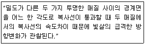
- 산란
- 굴절
- 반사
- 흡수
(정답률: 82%)
48. 적외선흡수스펙트럼에서 흡수 봉우리의 파수는 화학결합에 대한 힘 상수의 세기와 유효 질량에 의존한다. 다음 중 흡수 파수가 가장 클 것으로 예상되는 신축 진동은?
- ≡C-H
- =C-H
- -C-H
- -C≡C-
(정답률: 79%)
49. 몰흡광계수(molar absorptivitiy)의 값이 300M-1cm-1인 0.0⑤M용액이 1.0cm 시료용기에서 측정되는 흡광도(absorbance)와 투광도(transmittance)는?
- 흡광도=1.5, 투광도=0.0316%
- 흡광도=1.5, 투광도=3.16%
- 흡광도=15, 투광도=3.16%
- 흡광도=15, 투광도=0.0316%
(정답률: 69%)
50. 단색화 장치의 하나인 슬릿은 인접 파장을 분리하는 역할을 하는데 이것의 나비를 넓게 할 때 나타나는 현상이 아닌 것은?
- 빛의 양이 너무 많아져 S/N비가 커진다.
- 공명선의 구별이 어려워진다.
- 분석 검정선이 굽어진다.
- 정확도가 증가한다.
(정답률: 78%)
51. 찬-증기 원자흡수분광법(CVAAS)에 대한 설명으로 옳은 것은?
- 알킬수은 화합물은 전처리 없이 CVAAS로 직접 정량할 수 있다.
- CVAAS 분석을 위해 산류에 의한 전처리를 할 때에는 열판 위의 열린 상태에서 전처리하면 안된다.
- CVAAS는 수은(Hg) 증기 외에 수소화물도 생성시킬 수 있으므로 수소화물 생성법의 한 종류라고 말할 수 있다.
- 유기물을 전처리 시 KMnO4나 (NH4)2S2O8등을 사용하는데 유기물 분해 후의 여분의 강산화제는 제거하지 않아도 CVASS분석에 영향이 없다.
(정답률: 50%)
52. 불꽃분광법과 비교한 플라스마광원 방출분광법의 특징에 대한 설명으로 옳은 것은?
- 플라스마 광원의 온도가 불꽃보다 낮기 때문에 원소상호간 방해가 적다.
- 높은 온도에서 분해가 용이한 불안정한 원소를 낮은 농도에서 분석할 수 있다.
- 하나의 들뜸 조건에서 동시에 여러 원소들의 스펙트럼을 얻을 수 있다.
- 내화성 화합물을 생성하는 원소나 요오드, 황과 같은 비금속을 제외하고 적용범위가 넓다.
(정답률: 47%)
53. 적외선 분광의 지문영역의 범위로 옳은 것은?
- 3600~1250cm-1
- 3200~2900cm-1
- 1800~1300cm-1
- 1200~600cm-1
(정답률: 73%)
54. 다음 중 에너지가 가장 작은 전자기복사파는?
- 가시광선
- 마이크로파
- 근적외선
- 자외선
(정답률: 78%)
55. 형광의 세기에 영향을 주는 변수가 아닌 것은?
- 양자효율
- 에너지 전이형태
- 전자쌍 효과
- 온도 및 용매의 극성 증가
(정답률: 50%)
56. 다음 보기의 분광기 중 기기의 광원과 검출기가 90°를 유지하여 하는 것만으로만 나열된 것은?
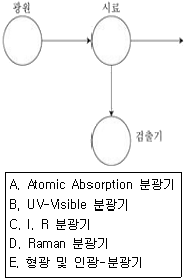
- A, B
- B, C
- B, D
- D, E
(정답률: 67%)
57. 광학기기의 부분장치 중 광전검출기로 사용되는 진공광전관(vaccum phototube)은 어떠한 원리를 이용하여 복사선의 세기를 측정하는가?
- 인광효과
- 광전효과
- 회절효과
- 브라운효과
(정답률: 69%)
58. 분자의 형광 및 인광에 대한 설명으로 틀린 것은?
- 형광은 들뜬 단일항 상태에서 바닥의 단일항 상태에로의 전이이다.
- 인광은 들뜬 삼중한 상태에서 바닥의 단일항 상태에로의 전이이다.
- 인광은 일어날 가능성이 낮고 들뜬 삼중항 상태의 수명은 꽤 길다.
- 인광에서 스핀이 짝을 이루지 않으면 분자는 들뜬 단일항 상태로 있다.
(정답률: 62%)
59. 2.5μm의 파장을 가진 적외선의 파수는 얼마인가?
- 2500cm-1
- 3000cm-1
- 4000cm-1
- 4500cm-1
(정답률: 63%)
60. 퓨리네(Fourier)변환 적외선 기기가 분산형 적외선 기기보다 좋은 점이 아닌 것은?
- 산출량(Throughput)
- 정밀한 파장 선택
- 더 간단한 기계적 설계
- IR 방출의 제거를 하지 않음
(정답률: 62%)
4과목: 기기분석II
61. 기체 크로마토그래피의 검출기로 사용한 것이 적합하지 않은 것은?
- 질량 분석기(mass spectrometer)
- 전기화학 검출기(electrochemical detector)
- 불꽃 이온화 검출기(flame ionization detector)
- 열 전도도 검출기(thermal conductivity detector)
(정답률: 42%)
62. 열무게법(TG)에서 전기로를 질소와 아르곤으로 환경기류를 만드는 주된 이유는?
- 시료의 환원 억제
- 시료의 산화 억제
- 시료의 확산 억제
- 시료의 산란 억제
(정답률: 80%)
63. 시료를 처리하여 크로마토그래피로 분석하고자 한다. 다음 중 퍼지-트랩 기구에 대한 설명으로 틀린 것은?
- 액체나 고체로부터 휘발성 물질의 농축
- 분석물질의 100%를 시료로부터 얻는 방법
- 퍼지기체가 3중의 흡착제가 들어있는 흡착관을 통과
- 휘발성 액체정지상으로 입힌 용융실리카로 화합물의 흡착
(정답률: 50%)
64. 크로마토그래피에서 봉우리 넓힘에 기여하는 요인에 대한 설명으로 틀린 것은?
- 충전입자의 크기는 다중 통로 넓힘에 영향을 준다.
- 이동상에서의 확산계수가 증가할수록 봉우리 넓힘이 증가한다.
- 세로확산은 이동상의 속도에 비례한다.
- 충전입자의 크기는 질량이동계수에 영향을 미친다.
(정답률: 75%)
65. 기체크로마토그래피의 컬럼 중, 충진된 컬럼(Packed Column)과 열린 관 컬럼(Open Tubular Column)을 비교할 때, 열린 관 컬럼의 장점이 아닌 것은?
- 분석 시간이 짧아진다.
- 고압 펌프가 필요 없다.
- 주입할 수 있는 시료 용량이 커진다.
- 분해능이 좋아진다.
(정답률: 48%)
66. 손환전압전류법(cycIic voltammetry)은 특정성분의 전기화학적인 특성을 조사하는데 기본적으로 사용된다. 순환전압전류법에 대한 설명으로 옳은 것은?
- 지지전해질의 농도는 측정시료의 농도와 비슷하게 맞추어 조절한다.
- 한 번의 실험에는 한 종류의 성분만을 측정한다.
- 전위를 한쪽 방향으로만 주사한다.
- 특정성분의 정량 및 정성이 가능하다.
(정답률: 56%)
67. 다음 표를 참고하여 C12H24(분자량, M=168)에 대해 M+에 대한 (M+1)+봉우리 높이의 비((M+1)+/M+)는 얼마인가?
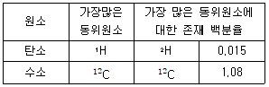
- 13.32%
- 14.25%
- 16.73%
- 18.59%
(정답률: 36%)
68. 기준전극을 사용할 때 주의사항에 대한 설명으로 틀린 것은?
- 전극용액의 오염을 방지하기 위하여 기준전극매부 용액의 수위가 시료의 수위보다 낮게 유지시켜야 한다.
- 염화이온, 수은, 칼륨, 은 이온을 정량할 때는 염다리를 사용하면 오차를 줄일 수 있다.
- 기준전극의 염다리는 질산칼륨이나 황산나트륨 같이 전극전위에 방해하지 않는 물질을 포함하면 좋다.
- 기준전극은 셀에서 IR 저항을 감소시키기 위하여 가능한 작업전극에 가까이 위치시킨다.
(정답률: 68%)
69. 분자 질량분석법은 시료의 종류 및 형태에 따라 다양한 이온화 방법이 사용된다. 이온화 방법이 옳게 않게 짝지어진 것은?
- 전자충격(EI)-빠른 전자
- 화학이온화(Cl)-기체 이온
- 장이온화(Fl)-빠른 이온살
- 장탈착(FD)-높은 전위전극
(정답률: 58%)
70. 분배 크로마토그래피에 대한 설명으로 틀린 것은?
- 정상 크로마토그래피는 낮은 극성의 이동상을 사용한다.
- 역상 크로마토그래피는 높은 극성의 이동상을 주로 사용한다.
- 결합상 충전물에 결합된 피막이 비극성성빌을 가지고 있으면 역상으로 분류한다.
- 정상 분리의 주된 장점은 물을 이동상으로 사용할 수 있다는 것이다.
(정답률: 68%)
71. 질량 스펙트럼에서 기준 봉우리란 무엇을 의미하는가?
- 각 봉우리 값의 평균값을 나타내는 봉우리
- 가장 높은 값을 나타낸 봉우리
- 가장 낮은 값을 나타낸 봉우리
- 최대 봉우리와 최소 봉우리의 차이 값을 갖는 봉우리
(정답률: 72%)
72. 다음 중 질량분석법에서 m/z비에 따라 질량을 분리하는 장치가 아닌 것은? (단, m은 질량, z는 전하이다.)
- 사중극자(quadrupole)분석기
- 이중 초점(double focusing)분석기
- 전자 중배관(electron multiplier)분석기
- 자기장 부채꼴 분석기(magnetic sector analyzer)
(정답률: 67%)
73. 머무름 인자(k, retention factor)를 가장 잘 나타낸 것은?
- 이동상의 속도(velocity)
- 분석물질의 이동상과 정지상 사이의 분배(distribution)
- 분석물질이 컬럼을 통과하는 이동 속도(migration rate)
- 분석물질의 분리 정도
(정답률: 62%)
74. Mg2+와 Ca2+를 분석하기에 가장 적합한 크로마토그래피는?
- 이온교환 크로마토그래피
- 크기배제 크로마토그래피
- 기체 크로마토그래피
- 분배 크로마토그래피
(정답률: 75%)
75. 다음 중 질량분석기에서 질량분석관(mass analyzer)의 역할과 유사한 분광계의 기기장치는?
- 광원
- 원자화장치
- 회절발
- 검출기
(정답률: 77%)
76. MgC2O4ㆍ2H2O(148.36g/mol)를 500℃까지 가열하면 MgO(40.30g/mol)로 변한다. MgC2O4ㆍ2H2O가 들어있는 시료 2.50g을 500℃까지 가열하였더니 1.04g이 되었다면 시료중 MgC2O4ㆍ2H2O의 %는? (단, 시료 중에 들어있는 다른 물질들은 500℃까지 가열해도 안정하다.)
- 42%
- 60%
- 70%
- 80%
(정답률: 40%)
77. Cd | Cd2+(0.0100M) ∥ Cu2+(0.0100M) | Cu전지의 저항이 3.0Ω이라고 가정하고 0.15A 전류를 생성시키려고 할 때 필요한 전위는 약 몇 V인가? (단, Cd2+의 표준환원전위=-0.403V이고, Cu2+의 표준환원전위=0.337V이다.)
- 0.29
- 0.37
- 0.59
- 0.74
(정답률: 33%)
78. 전자포획검출기(ECD)로 검출할 수 있는 화합물은?
- 메틸아민
- 에틸알코올
- 헥산
- 디클로로메탄
(정답률: 66%)
79. 전위차법의 기준전극으로서 갖추어야 할 조건이 아닌 것은?
- 비가역적이어야 한다.
- Nernst식에 따라야 한다.
- 시간에 따라 일정전위를 나타내야 한다.
- 작은 전류가 흐른 후에 원래의 전위로 돌아와야 한다.
(정답률: 75%)
80. 폴라그래피에 대한 설명으로 틀린 것은?
- 폴라그래피의 질량이동은 확산에 의해서만 일어난다.
- 확산전류는 분석물의 농도에 비례하므로 정량분석이 가능하다.
- 폴라그래피에서 사용하는 적하수은 전극은 새로운 수은적극 표면이 계속적으로 생성된다.
- 수은은 쉽게 산화되지 않으므로 적하수은 전극은 산화전극으로 널리 사용된다.
(정답률: 84%)
4NH3(g) + 5O2(g) → 4NO(g) + 6H2O(g)
이 화학반응식에서 반응물과 생성물의 분자수가 같아지도록 계수를 조정해야 한다. 이를 위해 각 원소의 원자수를 계산해보면 다음과 같다.
반응물: N 4개, H 12개, O 10개
생성물: N 4개, H 12개, O 10개
반응물과 생성물의 원자수가 같으므로, 반응물과 생성물의 계수는 다음과 같이 조정할 수 있다.
4NH3(g) + 5O2(g) → 4NO(g) + 6H2O(g)
따라서, 정답은 "a=4 b=5 c=4 d=6"이다.